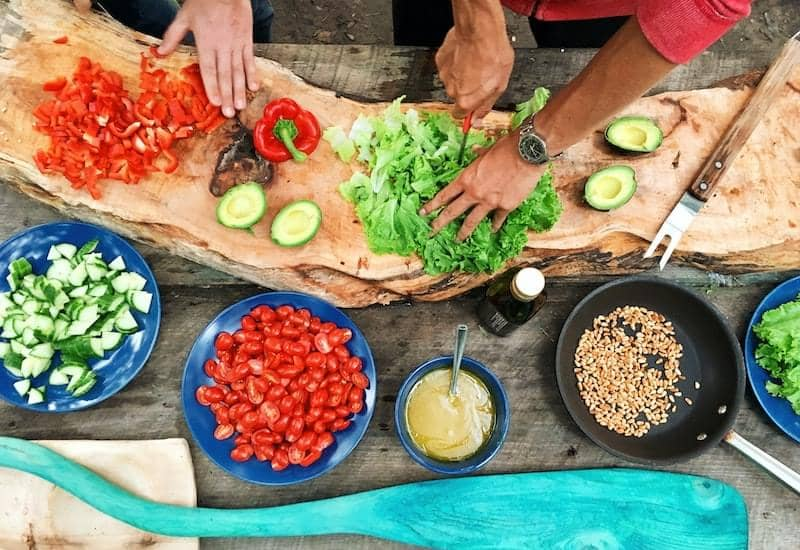
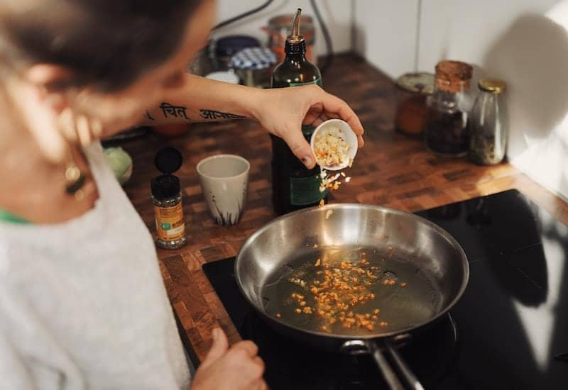
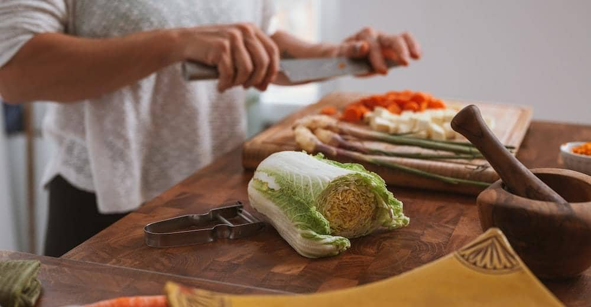
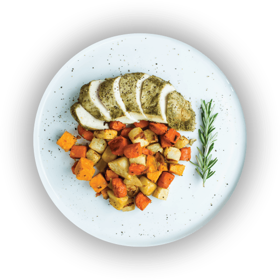
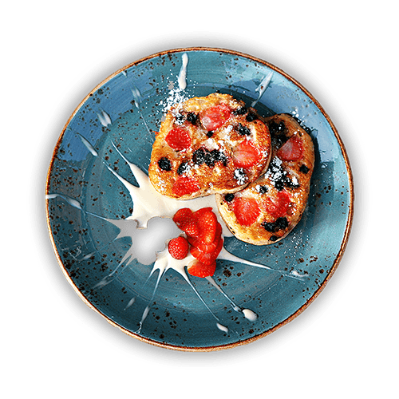

Banana Pancake with Honey Mapple Syrup
Fluffy banana pancakes folded with mashed fruit and finished under a warm drizzle of honey maple syrup.
30
MinsPreparation
20
MinsBaking
Ingredients
- 2 lb frozen tater tot (910 g)
- 4 boneless, skinless chicken thighs
- 1 tablespoon whole grain mustard
- 2 tablespoons olive oil
- salt, to taste
- pepper, to taste
- ½ red onion, sliced
- 1 cup cheddar cheese (100 g)
- 1 cup monterey jack cheese (100 g)
Preparations
Step 1/3
Begin by mashing two very ripe bananas in a large mixing bowl until the fruit is smooth and almost free of lumps, then whisk in the milk, a single egg, and a spoonful of melted butter. In a separate bowl sift together the flour, baking powder, a pinch of salt, and a little sugar so the dry ingredients are evenly combined. Pour the wet mixture into the dry and stir gently with a spatula, taking care to stop the moment the streaks of flour disappear; a few small lumps are perfectly fine and keep the pancakes tender. Overworking the batter develops gluten and leaves the finished stack tough and rubbery, so resist the urge to keep mixing. Let the batter rest at room temperature for ten minutes while you warm the pan, allowing the gluten to relax and the leavening to activate before cooking.


Step 2/3
Heat a nonstick skillet over medium heat and brush it lightly with butter, then ladle about a quarter cup of batter for each pancake. Cook undisturbed until small bubbles form across the surface and the edges begin to look set, roughly two minutes. Slide a thin spatula underneath and flip in one confident motion, then cook the second side until golden and cooked through, about another minute or so.

Step 3/3
Stack the warm pancakes three or four high on a heated plate so they hold their temperature while you finish the batch. Gently warm the honey maple syrup in a small pan until it loosens and pours easily, then spoon it generously over the top so it runs down the sides. Finish with a few fresh banana slices, a light dusting of icing sugar, and serve straight away while every layer is still soft and steaming.
Help & Tips
For the lightest texture use bananas that are heavily speckled, as they mash smoothly and add natural sweetness. Keep the heat moderate so the centres cook through before the outsides brown.
Top Reviews
View all reviewsThe best recipe I ever had before
Followed every step exactly and the pancakes came out perfectly fluffy and golden. The honey maple syrup tied it all together beautifully.
- Kelvin S.
Very easy and delicious Pasta Recipe
So simple to put together on a busy weeknight, and the whole family asked for seconds. The instructions were clear and the timing was spot on.
- John Mount.
Simple and Awseome
Honestly one of the easiest recipes I have tried, yet it tastes like something from a proper cafe. The batter resting tip made a real difference and the results were wonderfully light.
- Robert Clef.
Related Posts:

Dessert
Baked Salmon with Sweet Potatoes


Breakfast, Dessert
Pumpkin Bars with Cream Cheese Frosting
Italian